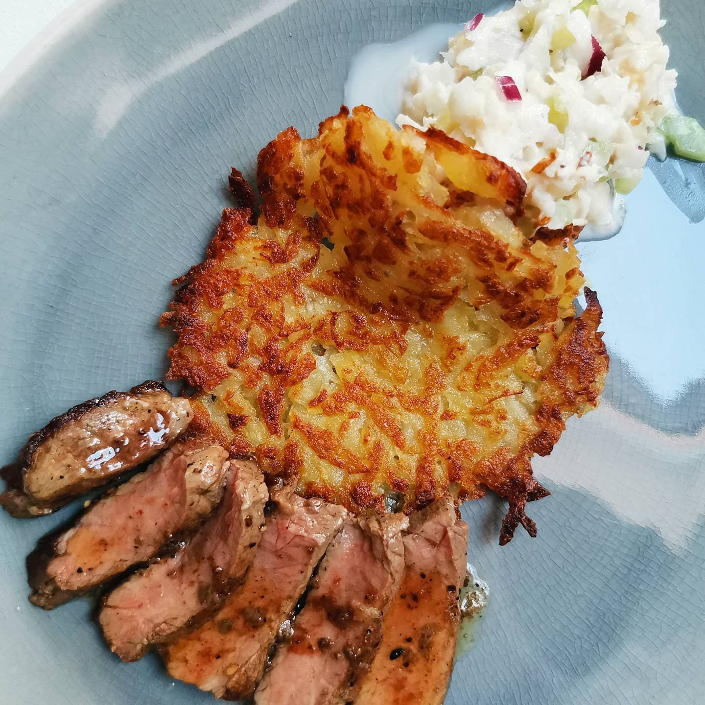

Zelerový šalát podľa @kazdy_moze_varit — Normy Jedál
Rib eye stejk so zemiakovou plackou a zelerovo-jablkovým šalátom. Raz som sa ulakomil na 21 dní vyzretý rib eye stejk z Lidlu a nebol zlý, ale naozaj sa to nedá porovnať s poriadne vyzretým kvalitným masom, napríklad s označením USDA, alebo poctivo vyzretým mäsom od vášho mäsiara, aké sa dá (aspoň v Bratislave) kúpiť už bežne. Takže aj keď stejk bol výborný a šťavnatý, nabudúce nebudeme šetriť a pojdeme si po mäso napríklad do @carnevallerestaurant, aby sa náš stejk dal krájať aj lyžicou. 😊
*recept v pribehu*
#jedlo #varenie #recepty #maso #stejk #steak #hovadzie #zelerovysalat